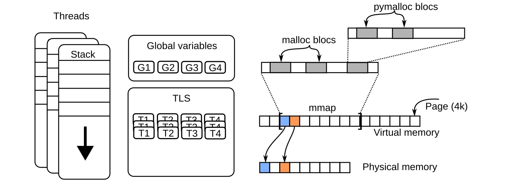

Understanding the metrics
MALT exposes many metrics over its profiles, all the metrics will be listed and explained here.
Reminder on Memory
MALT as it is named (MAlloc Tracker) aimed at tracking all the malloc() of an application to report the memory used by itself.
For a C, C++, Rust, Fortran application there is 4 ways to request memory to the system from the language semantic.
You can find the general view here :
{kind=link}

The 4 memory consumption parts.
Global variables
The first common way is the global variables, they are allocated globaly for the run when spawning the process. Except if it contains specific values at start, a global variable is initially a virtual space allowed to be accessed in the memory and filled by default with zeroes.
Note that is you do not access it it will use virtual memory but not physical one You will find in MALT the ratio between those two consumption about global variables.
The amount of virtual memory is fixed at the start of the app, but the physical memory will increase over the run as we access the variable making it mapped in memory.
This is why you can see in the time charts in increase of the physicial memory without making any calls to mallocs.
Thread Local Storage (TLS)
The global variables are shared between all threads. In C, C++ there is a way to use an annotation to make a global variable private to each thread. This is called a Thread Local Storage says in acronym, a TLS. In this case, the memory consumption of the variable will be the size of the varaible times the number of threads.
Stacks
The local variables inside functions are stored into the stacks which can grow as we go deeper in the call hierarchy mainly when we do recursion. MALT is currently unperfect to track this memory but tries to give some hints if you compiled you code with -finstrument-functions on GCC compiler.
mmap
This is a call you generally never use at an app programer level. mmap is the main function to request memory to the operating system. It by default provides a segment which is virtually mapped. Meaning that is consumes virtual memory but not physical memory. By default on a first access, (first touch we say) a physical page will be filled with zeroes and mapped into the segment.
Notice here that the zeroes filling can imply a large overhead when the segment is large. This is way we should keep large allocations for a long time and not allocate / deallocate them intensively otherwise we can pass half of our time to just write zeroes into the memory.
Note that the cost of the zeroing will not be paied at the allocation time but latter in the computation at the first access to the considered memory region.
As a by design restriction, mapp only allow managing sizes and addresses multiple of then hardware page size generally 4 KB. This is way it is rarely used directly the application codes.
Remark that MALT will account the mmap calls only if they are done by the user, it will not count the once made by the memory allocator itself.
malloc
As mmap do not allow to handle any kind of sizes, malloc() has been built to fill this gap and by itself call mmap and handle the splitting of the segments it handles to store the allocations you request about any kind of sizes.
This is in C what is used to allocate dynamic memory and is the main function tracked by MALT.
Metrics
Here a short summary of the matrics exported by MALT :
Metric |
Short description |
|---|---|
Allocated mem |
Sum of all the mallocs and mmap done. |
Allocated count |
Count of all calls to malloc() and mmap() |
Min. alloc size |
Minimum block size allocated at this location. |
Max. alloc size |
Maximum block size allocated at this location. |
Freed mem. |
Amount of memory freed on this line. |
Free count. |
Number of call to free() function on this line. |
Memory ops. |
Total number of memory ops done on this line (malloc + mmap + free). |
Local peak |
Peak for this local line. |
Global peak |
Contribution to the peak of this specific line. |
Leaks |
Amount of memory leaking on this line. |
Max lifetime |
Maximum lifetime of the blocks on this line. |
Min lifetime |
Minimum lifetime on this line. |
Recycling ratio |
Number of time this line reallocated its peak memory. |
Realloc count |
Number of calls to realloc(). |
Realloc sum |
Amount of memory allocated in total by realloc(). |
Mmap mem. |
Amount of memory allocated in total by mmap(). |
Mmap count |
Number of calls to mmap. |
Munmap mem. |
Amount of memory freed in total by munmap(). |
Munmap count |
Number of calls to munmap. |
Allocated memory
This metric just sum up the sizes given to all mallocs and mmap. In other words it represent the memory volume to be managed by the allocator and the system.
This metric give an indirect view on the time which is require to mange this volume of memory. Mainly if it becomes gigatbytes, it means this the code might take a long time to exchange its memory with the operating system.
Lets take an example:
void func() {
void * a = malloc(32); //allocated mem. of func = 32
void * b = malloc(32); //allocated mem. of func = 64
free(b);
void * c = malloc(64); //allocated mem. of func = 128
free(c);
free(a);
void * d = mmap(... 4096 ...); //allocated mem. of func = 128 + 4096
munmap(d...);
}
main() {
func(); //allocated mem. = 128 + 4096
}
Allocated count
The numer of memory allocation for the given line. Accounting the malloc and mmap. It show the potential oberhead due to malloc itself.
void func() {
void * a = malloc(32); //allocated count of func = 1
void * b = malloc(32); //allocated count of func = 2
free(b);
void * c = malloc(64); //allocated count of func = 3
free(c);
free(a);
void * d = mmap(... 4096 ...); //allocated count of func = 4
munmap(d...);
}
main() {
func(); //allocated count = 4
}
Min. alloc size
The minimum size passed as parameter of malloc or mmap on the given site. It permits to find the small memory allocations.
void func() {
void * a = malloc(32); //min. alloc size of func = 32
void * b = malloc(32); //min. alloc size of func = 32
free(b);
void * c = malloc(16); //min. alloc size of func = 16
free(c);
free(a);
void * d = mmap(... 4096 ...); //min. alloc size of func = 16
munmap(d...);
}
int main() {
func(); //min. alloc size = 16
}
Max. alloc size
Maximum size passed to malloc or mmap on the given line. It permits to find the large memory allocations in the application.
void func() {
void * a = malloc(32); //max. alloc size of func = 32
void * b = malloc(32); //max. alloc size of func = 32
free(b);
void * c = malloc(16); //max. alloc size of func = 32
free(c);
free(a);
void * d = mmap(... 4096 ...); //max. alloc size of func = 4096
munmap(d...);
}
int main() {
func(); //max. alloc size = 4096
}
Freed mem.
Amount of memory freed on the given line by free or munmap. It is computed by summing the size of all the blocks freed on the given location.
void func() {
void * a = malloc(32);
void * b = malloc(32);
free(b); //freed mem. of func = 32
void * c = malloc(16);
free(c); //freed mem. of func = 48
free(a); //freed mem. of func = 80
void * d = mmap(... 4096 ...);
munmap(d...); //freed mem. of func = 80 + 4096
}
int main() {
func(); //freed count. = 80 + 4096
}
Free count
Number of calls to free and munmap functions.
void func() {
void * a = malloc(32);
void * b = malloc(32);
free(b); //freed count. of func = 1
void * c = malloc(16);
free(c); //freed count. of func = 2
free(a); //freed count. of func = 3
void * d = mmap(... 4096 ...);
munmap(d...); //freed count. of func = 4
}
int main() {
func(); //freed count. = 4
}
Memory ops
Count the number of memory operations done on a given location.
void func() {
void * a = malloc(32); // memory ops. of func = 1
void * b = malloc(32); // memory ops. of func = 2
free(b); // memory ops. of func = 3
void * c = malloc(16); // memory ops. of func = 4
free(c); // memory ops. of func = 5
free(a); // memory ops. of func = 6
void * d = mmap(... 4096 ...); // memory ops. of func = 7
munmap(d...); // memory ops. of func = 8
}
int main() {
func(); // memory ops. of func = 8
}
Local peak
This is the memory consumption peak for a given code location. It takes in account all the memory allocation done on this particular location.
void func() {
void * a = malloc(32); // local peak of func = 32
void * b = malloc(32); // local peak of func = 64
free(b);
void * c = malloc(16); // local peak of func = 64
free(c);
void * d = mmap(... 4096 ...); // local peak of func = 32 + 4096
munmap(d...);
}
int main() {
void * buffer = malloc(256); // local peak = 256
func(); // local peak = 256 + 32 + 4096
}
Note that the local peak is measured without keeping the log of all the allocs, it means that we cannot really compute the inclusive version of a parent function, because the peaks of the sub-childs might not rise at the same time. It means they cannot be summed easily.
Limitation: MALT currently apply this sum, but it is a sur-estimation of the real value.
Global peak
This metrics gives the memory consumption of the local site at the peak time.
Notice it can arise at a different moment than the local peak because the global peak does not necesserily arise at the time the local peak arise.
Leaks
This is the mallocs which are not paired with a free or an mmap not paried or partially paired with an munmap.
void func() {
void * a = malloc(32); // leak = 32
void * b = malloc(32);
free(b);
void * c = malloc(16);
free(c);
void * d = mmap(... 4096 ...);
munmap(d...);
}
int main() {
void * buffer = malloc(256);
func(); // leak = 32
}
Max lifetime
It takes the maximal delay between a malloc and its paired free on the given location.
If this value is too low and there is a large amount of allocation done at the given location it means that there is possibly a performance issue.
Min lifetime
It takes the minimal delay between a malloc and its paired free on the given location.
Recycling ratio
It compute the ratio of the allocatd volume over the local peak. It give a rougth estimation of the number of time the function reallocated its peak memory.
void func() {
void * a = malloc(32); // recyclong ratio = 1
free(a);
for (size_t i = 0 ; i < 1000 ; i++) {
void * c = malloc(16); // recyclong ratio = 1000
free(c);
}
}
int main() {
void * buffer = malloc(256);
func(); // recyclong ratio = 501 ((32 + 16*1000) / 32)
}
Realloc count
Count the number of realloc done at this location.
void func() {
void * a = realloc(nullptr, 32); // realloc count of func = 1
a = realloc(a, 64); // realloc count of func = 2
a = realloc(a, 16); // realloc count of func = 3
free(a);
}
int main() {
func(); // realloc count of func = 3
}
Realloc sum
Sum the memory delta of each realloc done at the given location.
void func() {
void * b = realloc(nullptr, 10); // realloc sum of func = 10
void * a = realloc(nullptr, 32); // realloc sum of func = 42
a = realloc(a, 64); // realloc sum of func = 74
a = realloc(a, 64); // realloc sum of func = 74
a = realloc(a, 16); // realloc sum of func = 26
free(a);
free(b);
}
int main() {
func(); // realloc sum of func = 26
}
Mmap mem
Sum the memory allocated by each mmap done at the given location.
void func() {
void * a = mmap(.... 1024*1024 ....); // mmap mem of func = 1 MB
void * a = mremap(a, .... 2048*1024 ....); // mmap mem of func = 2 MB
munmap(a + 1024*1024, 1024*1024); // mmap mem of func = 2 MB
void * a = mremap(a, .... 2048*1024 ....); // mmap mem of func = 3 MB
munmap(a, 2048*1024);
}
int main() {
func(); // mmap mem = 3 MB
}
Mmap count
Count the number of mmap done at the given location.
void func() {
void * a = mmap(.... 1024*1024 ....); // mmap count of func = 1
void * a = mremap(a, .... 2048*1024 ....); // mmap count of func = 2
munmap(a + 1024*1024, 1024*1024);
void * a = mremap(a, .... 2048*1024 ....); // mmap count of func = 3
munmap(a, 2048*1024);
}
int main() {
func(); // mmap count = 3
}
Munmap mem
Sum the memory freed by each munmap done at the given location.
void func() {
void * a = mmap(.... 1024*1024 ....);
void * a = mremap(a, .... 2048*1024 ....);
munmap(a + 1024*1024, 1024*1024); // munmap mem of func = 1 MB
void * a = mremap(a, .... 2048*1024 ....);
munmap(a, 2048*1024); // munmap mem of func = 3 MB
}
int main() {
func(); // munmap mem = 3 MB
}
Munmap count
Count the number of munmap done at the given location.
void func() {
void * a = mmap(.... 1024*1024 ....);
void * a = mremap(a, .... 2048*1024 ....);
munmap(a + 1024*1024, 1024*1024); // munmap count of func = 1
void * a = mremap(a, .... 2048*1024 ....);
munmap(a, 2048*1024); // munmap count of func = 2
}
int main() {
func(); // munmap count = 2
}